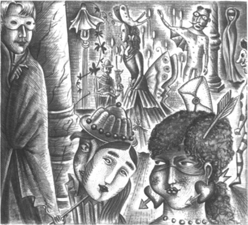

Chương 6
Listen to Part 1:

Bữa tiệc hóa trang
Đã gần nửa đêm. Raoul đang mặc chiếc áo choàng đen và chiếc mặt nạ trắng. Chàng trai trẻ nhìn xung quanh mình. Hàng trăm người đã đến dự bữa tiệc hóa trang lớn tại Nhà hát Opera Paris. Ai cũng đeo một chiếc mặt nạ che khuôn mặt. Raoul không quen một ai. Và không ai biết anh.

Raoul không nói chuyện với bất kỳ ai. Anh đợi trong một góc tối. Rồi anh nghe thấy tiếng chuông đồng hồ. Nó đổ 12 tiếng. Nửa đêm!
Lúc đó, một người phụ nữ chạm vào cánh tay anh. Người phụ nữ đang mặc chiếc áo choàng trắng. Raoul không thể nhìn thấy khuôn mặt của cô ấy. Cô ấy đang đeo một chiếc mặt nạ đen.
‘Christine?’ Raoul nói. ‘Cô có phải là Christine không?’
Người phụ nữ không nói. Cô ấy bước đi khỏi Raoul. Raoul theo chân cô ấy. Người phụ nữ đi ra phía sau sân khấu. Cô ấy đi dọc theo hành lang. Rồi cô ấy bắt đầu lên cầu thang. Raoul đi theo cô ấy lên cầu thang. Họ đã leo rất, rất nhiều bậc thang.
Cuối cùng, người phụ nữ dừng lại trước một cánh cửa nhỏ. Cô ấy mở cửa và đi qua cánh cửa đó. Raoul đi theo cô ấy qua cánh cửa. Họ đang ở trên mái của tòa nhà khổng lồ. Raoul nhìn xung quanh anh ấy. Anh ấy nhìn thấy ánh đèn của Paris bên dưới.
Người phụ nữ đi về phía mép mái. Rồi cô ấy dừng lại. Raoul đi về phía cô ấy. Cả hai cùng tháo mặt nạ ra. Raoul nhìn khuôn mặt Christine.
‘Christine!’ Raoul nói. ‘Christine, anh yêu em! Anh đã nhìn thấy em mười năm trước, ở Brittany. Em đã hát cho anh và anh đã yêu em. Nhiều năm trôi qua. Rồi anh lại nhìn thấy em và lại yêu em thêm lần nữa! Anh đã đến Nhà hát Opera hai ngày trước. Anh muốn nói chuyện với em, Christine. Anh đã thấy em trong phòng thay đồ của em. Nhưng em đã biến mất. Em đã đi đâu, Christine? ’
Listen to Part 2:
‘Anh không được hỏi câu hỏi đó, Raoul,’ Christine nói.
‘Nhưng anh yêu em!’ Raoul nói. ‘Christine, làm ơn lắng nghe anh nói! Làm ơn hát lại cho anh nghe. Làm ơn cưới anh, Christine. ’
‘Em không thể cưới anh, Raoul,’ Christine buồn bã nói.
‘Tại sao, Christine? Tại sao vậy?’ Raoul hỏi.
‘Em không thể lấy bất kỳ ai,’ Christine nói. ‘Erik sẽ không để em kết hôn. ’
‘Erik?’ Raoul nói.
‘Erik là Thiên thần âm nhạc của em,’ Christine nói. ‘Anh ấy là thầy của em. ’
‘Kể cho anh nghe về Erik,’ Raoul hỏi. ‘Anh ta ở đâu. ’
‘Erik là một kiến trúc sư. Anh ấy là một nhạc sĩ. Và anh ấy là một người thầy tuyệt vời,’ Christine nói. ‘Anh ấy sống bên dưới sân khấu của Nhà hát Opera. ’
‘Anh muốn gặp anh ta!’ Raoul nói. ‘Anh muốn nói chuyện với anh ấy!’
Listen to Part 3:
‘Không, Raoul, không!’ Christine nói. ‘Anh không được nói chuyện với Erik.’ Christine đã sợ hãi.
‘Anh xin lỗi, Raoul,’ cô nói. ‘Em không thể kết hôn. Em không thể có bạn bè. Và em không thể hát cho anh nghe được nữa. Em chỉ hát cho Erik. Em chỉ hát cho anh ấy. Em sẽ hát vào đêm mai. Em sẽ hát trong Faust.’
‘Carlotta sẽ không hát vào ngày mai à?’ Raoul hỏi.
‘Carlotta sẽ lại bị ốm,’ Christine nói. ‘Erik đã nói với em như vậy. Erik biết mọi thứ!’
Đột nhiên, họ nghe thấy một âm thanh phía sau. Họ không đơn độc trên sân thượng. Một người đàn ông cao lớn đang đứng gần cửa cầu thang. Người đàn ông cao lớn mặc một chiếc áo choàng đen và một chiếc mặt nạ trắng. Anh ta đang nhìn Raoul và Christine.
Christine đã rất sợ hãi.
‘Tạm biệt, Raoul, em không được gặp anh nữa,’ cô nói. ‘Tạm biệt!’
Sau đó, cô ấy bỏ chạy khỏi chàng trai trẻ. Cô ấy chạy qua toàn bộ mái nhà.
Listen to Part 4:
‘Christine! Christine!’ Raoul hét lên. ‘Em đang đi đâu? Anh phải làm sao đây?’
Raoul muốn đi theo Christine. Và anh muốn nói chuyện với người đàn ông cao lớn đeo mặt nạ trắng. Người đàn ông này có phải là Erik không? Và Erik có phải là Bóng ma của nhà hát Opera không?
Raoul nhìn xung quanh. Christine đã đi mất. Người đàn ông cao lớn cũng đã biến mất! Raoul đang đơn độc trên nóc Nhà hát Opera.
Anh nhìn lên những ngôi sao trên bầu trời đêm đen kịt. Anh nhớ cô gái trên bãi biển. Chàng trai trẻ rất đau khổ.
Anh từ từ đi về phía cầu thang.
Mục lục
- Tiêu đề
- Nội dung
- Ghi chú về Tác giả
- Ghi chú về Câu chuyện
- Nhân vật trong Câu chuyện
- 1 Thiên thần Âm nhạc
- 2 Bữa tiệc tại Nhà hát Opera
- 3 Raoul đến Nhà hát Opera
- 4 Ghế số 5
- 5 Tấm gương trong Phòng thay đồ
- 6 Vũ hội hóa trang
- 7 Câu chuyện của Người Ba Tư
- 8 Christine Biến mất!
- 9 Bên dưới Nhà hát Opera
- 10 Hồ nước và Cây đàn
- 11 Bóng ma Nhà hát Opera
- Bản quyền